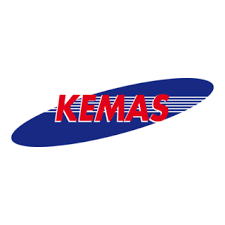
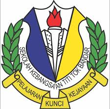
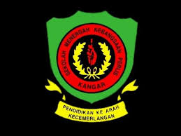

My Education Journey
From early learning to higher education
Geraduan Kecil
Years: 2006 – 2007
Age: 3 – 4 years old
Location: Bukit Mertajam, Pulau Pinang

Tadika Kemas Titi Tok Bandar
Years: 2007 – 2008
Age: 4 – 5 years old
Location: Kangar, Perlis
Pra Sekolah Titi Tok Bandar
Years: 2008-2009
Age: 5 – 6 years old
Location: Kangar, Perlis

Sekolah Kebangsaan Titi Tok Bandar
Years: 2010 – 2015
Age: 7 – 12 years old
Achievements: UPSR 5A, UPKK 8A
Sekolah Menengah Kebangsaan Agama (P) Alawiyah
Years: 2016 – 2018
Age: 13 – 15 years old
Achievements: PT3 5A

Sekolah Menengah Kebangsaan Perlis
Years: 2019 – 2021
Age: 16 – 18 years old
Achievements: SPM 3A
Sekolah Menengah Kebangsaan Syed Alwi
Years: 2022 – 2023
Age: 19 – 20 years old
Achievements: STPM 3.17

Universiti Teknologi MARA (UiTM) Cawangan Kedah
Years: 2023 – Present
Age: 20 – 22 years old
Programme: Bachelor of Information Science (Hons) Library Management